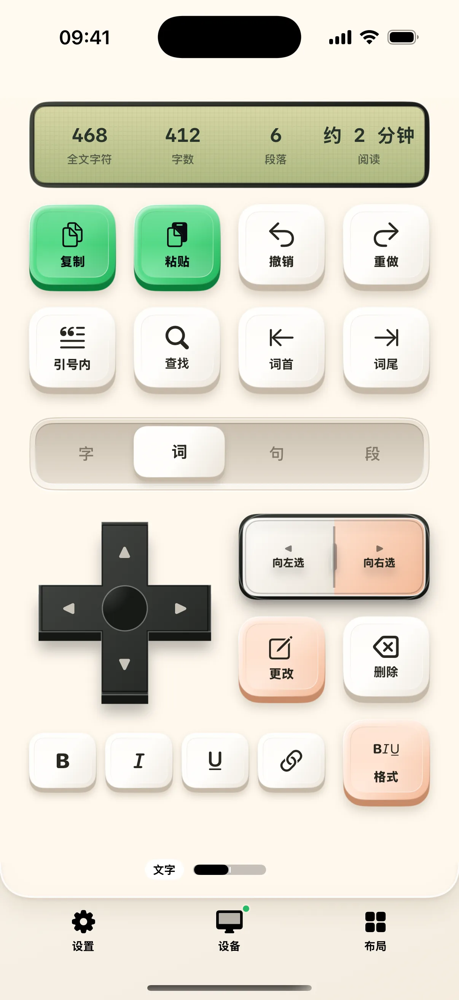
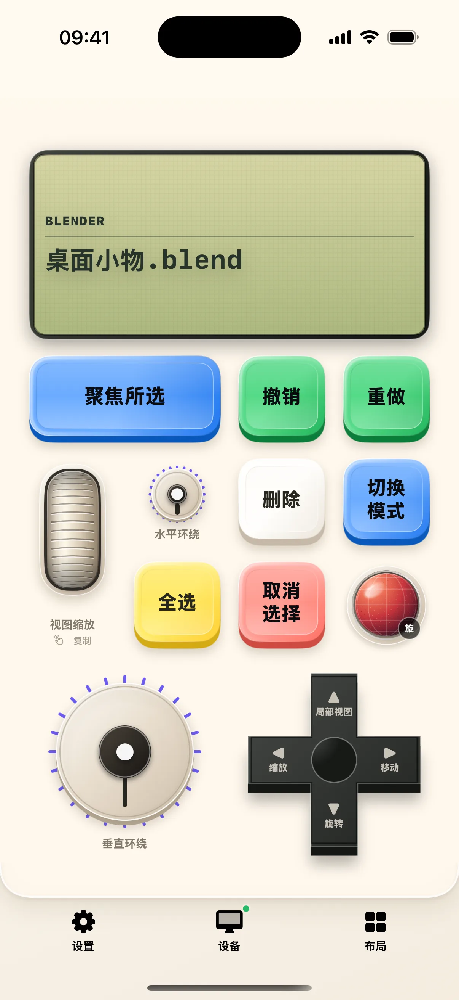

>w< 深度专栏与使用指南
文章专栏
探索剪辑创作、远程控制、语音输入与演说总控的实用技巧与深度指南

剪辑师的掌上副控：从 DaVinci 到剪映
同一套实体触感按键与无级旋钮，随前台剪辑软件与工作区智能联动。轻松穿梭时间线、标记打点与参数微调，大幅提升后期剪辑效率。
阅读全文 →
用 iPhone 控制 Mac：从工作布局开始
Mac 画面、触控板、滚轮和常用按键放在同一页，查看桌面时也能直接操作。

把 Mac Dock 放到手机上：启动器布局指南
用熟悉的软件图标启动或切换应用，让常用工具在手机上有固定位置。

手机输入网址、切换标签页：Mac 浏览器副控指南
地址输入、标签页切换、前进后退与独立滚轮，集中处理浏览时的常用动作。

用点击轮听歌：Apple Music、Spotify 与 Mac 媒体控制
转轮选歌、切换曲目信息、调音量和定时暂停，播放状态直接显示在手机上。

iPhone 演示遥控：翻页、激光笔、提词与计时
演讲辅助、演示控制和演讲计时三个桌面，让手机跟上讲述的节奏。

氛围编程布局：在手机上查看与操作 Codex 任务
任务状态、模型设置与常用输入集中到一页，配合 Mac 上的 Codex 使用。

在 iPhone 上使用 Mac 终端：多会话与常用控制键
真正的 Mac shell 会话，搭配终端小屏、全屏查看和 Esc、Tab、Ctrl 等按键。

写作副控：按字词句段移动、选择与整理 Markdown
文字与格式两个桌面，把选区操作、字数统计和常用排版放到手机上。

读资料时顺手摘录：科研布局与带出处的剪藏夹
把选文按观点、方法、证据和疑问收进手机，并保留实际取得的出处。

用手机翻 PDF 和 EPUB：Mac 阅读布局指南
翻页旋钮、阅读滚轮、目录与选文工具，陪你读完电脑上的长文。

手机变数字键盘：财务布局、计算器与 64 个公式
数字录入、本地计算器、表格快捷键与公式参数面板，分成六个桌面。

一套旋钮配合多款创作软件：应用创作台指南
按前台软件与工作区呈现控制，覆盖剪辑、图像和音乐制作中的已适配动作。

在手机上录声音、切片与打节奏：采样布局指南
录声音、切片、演奏三个桌面，声音库与 16 格演奏组合在手机本地工作。

手机上的游戏手柄：游戏布局与 Mac 串流
方向键、肩键与 ABXY 放在触屏上，配合 Mac 游戏画面和游戏库使用。

灯光与场景放进一张布局：Home Assistant 与 Apple 家庭
连接已有家庭，将设备能力转换为可编辑的开关、滑杆、旋钮与场景按钮。

文本预编辑与语音速记实战
在手机上口述转写与自由修饰错别字，再整段投送至 Mac 目标光标，避免反复修改。
告别翻页笔：手机变身智能演说总控
虚拟激光笔、自适应提词器与现场氛围音效，走下讲台依然自如掌控演示放映。
超低延迟串流：掌中接管 Mac 桌面
低延迟桌面原画串流、虚拟触控板与多任务窗口漫游，在手机上轻松操控 Mac。

从零定制你的专属副控小键盘
自由网格排布、无级旋钮阻尼调节与快捷动作绑定，打造契合习惯的专属小键盘。

macOS 权限配置与安全连接指南
辅助功能与屏幕录制授权排查，以及局域网本地点对点通信安全架构解析。